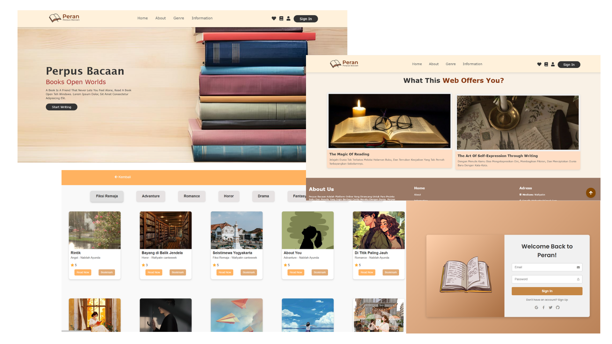
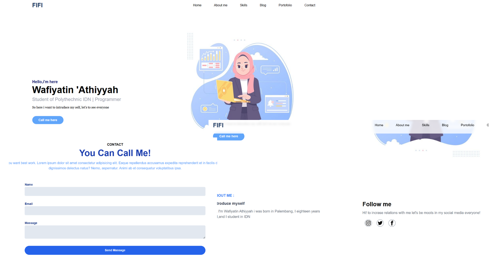
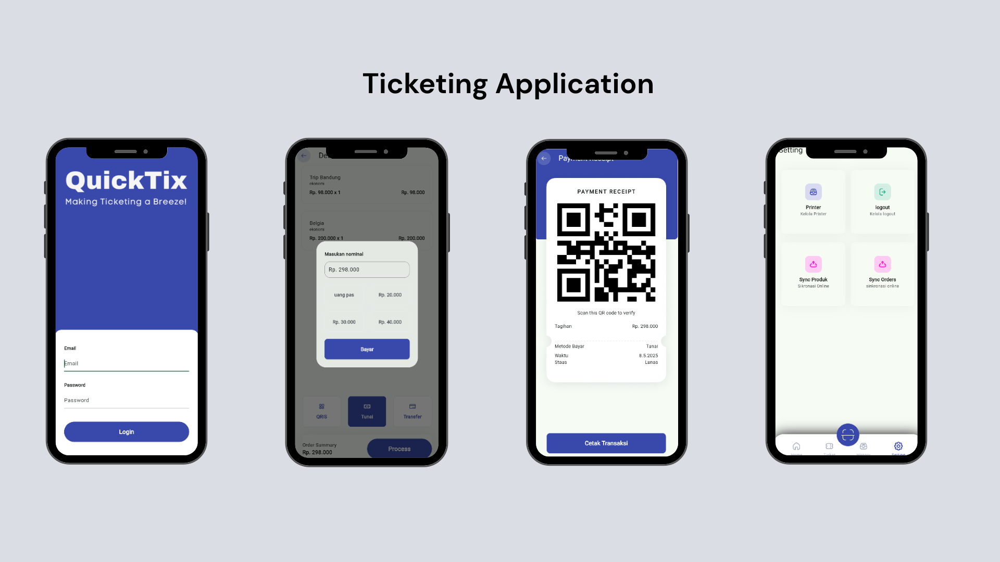

My Projects

Website Perpus Bacaan
Website perpustakaan digital berbasis Laravel dengan fitur baca, tulis cerita, komentar, bookmark, rating, dan UI yang responsif.

Webite Portfolio
Website pribadi dengan desain responsif, dan dibangun menggunakan HTML dan CSS

Website Bootcamp
Redesign website Bootcamp menggunakan Laravel dan Bootstrap.

Greenovate App
Aplikasi yang bertujuan membantu menjaga lingkungan dengan menyediakan artikel edukatif dan fitur marketplace untuk mempromosikan produk ramah lingkungan.

Ticketing Application
Aplikasi Ticketing dengan Frontend menggunakan Flutter untuk membangun antarmuka aplikasi, sedangkan backend menggunakan Laravel

Dashboard Website
Website dashboard responsif yang dibangun dengan Bootstrap.